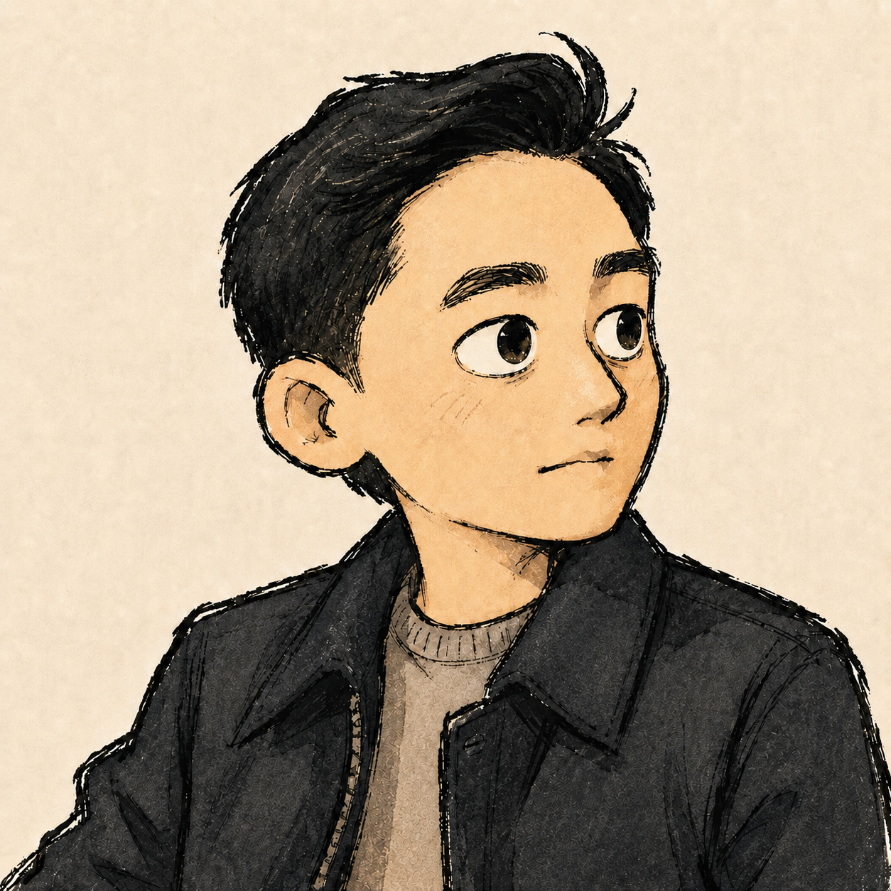

2020 — 2024
Software Engineer · Google
Built internal infrastructure and developer tooling for engineering teams at Google over four years.

About
I am a software engineer who enjoys solving problems — the kind where the requirements are unclear, the tradeoffs matter, and the right answer isn't obvious until you've asked the right questions.
I try to think carefully before acting, and I care about getting things right, not just getting them done. A good solution, to me, is one that is simple enough to be understood and solid enough to be trusted.
That way of thinking didn't come from a textbook. There have been periods in my life where the ground disappeared and I had to learn what I was made of. I didn't come out of those times with answers — but I came out with a different relationship to difficulty. One that doesn't flinch from it, and doesn't pretend it isn't there. I think that's just who I am now.
Work
2020 — 2024
Built internal infrastructure and developer tooling for engineering teams at Google over four years.
2015 — 2016
Owned the backend as the sole backend engineer for a mobile rewards ad platform; designed REST APIs with Flask and MariaDB, and built a virtual currency exchange protocol with T-money.
Education
2019
Completed coursework before choosing to focus on software engineering in industry.
2016
Focused on computer science within an interdisciplinary program spanning software, electrical engineering, and UX.
2012
Education
2025
Studied offensive security to better understand how systems are attacked and build software with stronger security judgment.
2025
Japanese Language Certificate.
Thoughts
A local-feeling agent, contained behind snapshots.
Learning to break systems, and rebuild confidence.
Why my 16GB M2 MacBook Air is still enough when paired with a Linux desktop.
A remote shell that stays connected, scrollable, and quiet.